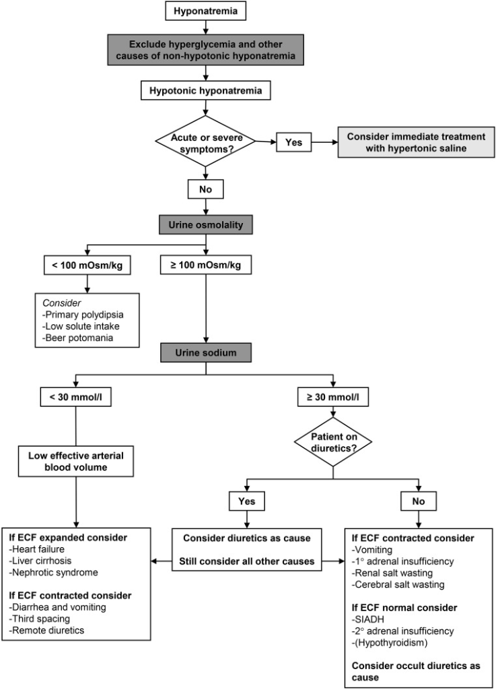
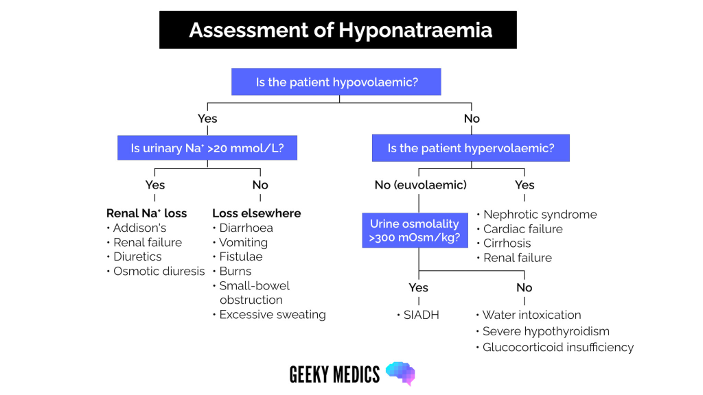
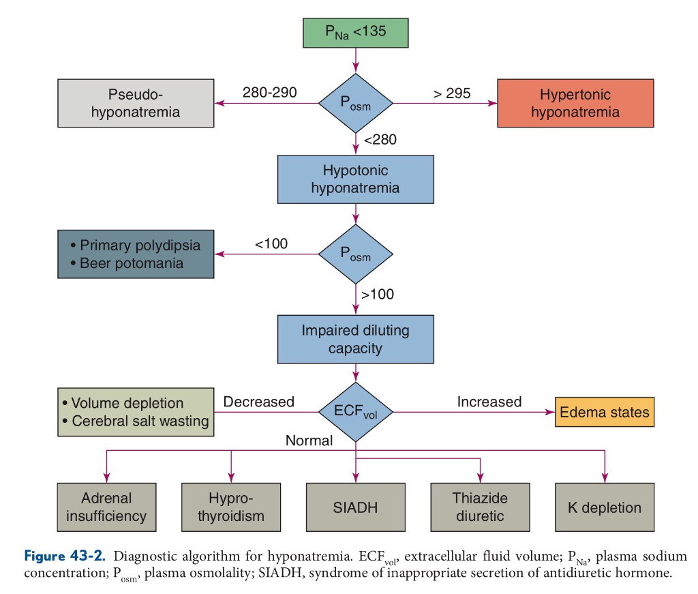

⚡ 急診快速模式：只顯示急診常用欄位。滲透壓、尿液鑑別診斷與進階選項請切換「🔬 完整模式」，兩種模式計算結果相同。
STEP 1
先判別是否需立即 3% NaCl Bolus
急症分流、基本體液參數與 24h/48h 安全矯正目標
mEq/L
< 135 為低血鈉；≤ 105 屬極重度高 ODS 風險
kg
成人體重；未填時仍可先看急症處置指引
歲
cm
預設採 MDCalc #480 體重係數法
1A. 神經學症狀嚴重度分級（請確認症狀可由低血鈉解釋，並同步檢查 ABCs、GCS、指尖血糖）
1C. 滲透壓去髓鞘症候群 (ODS) 風險因子檢核（主要風險因子將啟動目標 4–6、絕對上限 ≤ 8 mEq/L/24h）
mEq/L
< 3.5 自動納入主要 ODS 風險
mEq/L
若已治療一段時間，填寫初始 Na
mEq/L
不可於午夜歸零重算
小時
LABS
依 ESE 2014 指引整理
急診下一步檢驗：低血鈉鑑別診斷要抽什麼
① 發現 Na 低下，治療前一起抽
- 血：Glucose（高血糖需校正 Na；ESE 6.2.1.1）、Serum Osm（< 275 一定是低張；ESE 6.2.1.2）、BUN／Cr、K（低血鉀屬 ODS 高風險）
- 同一管 spot 尿：Urine Osm、Urine Na（ESE 6.3.1.1–6.3.1.3）、Urine K（U_Na + U_K 判斷 0.9% NaCl 會不會越補越低）
- 血與尿要同時採檢；盡量在給 0.9% NaCl 或利尿劑之前（ESE 6.3 Advice）
② U_Osm > 100、懷疑 SIAD 或體液狀態不明時加抽
- TSH（± Free T4）、Cortisol（± ACTH）：SIAD 須先排除甲狀腺、腎上腺、腦下垂體與腎功能不全（ESE Table 6；6.3 Advice）
- Serum Uric acid：< 4 mg/dL 支持 SIAD（ESE Table 6）
- 尿 Urea／UUN、尿 Cr、尿 Uric acid（配合血 Cr、BUN）：算 FE_Urea > 55%、FENa > 0.5%、FE_UA > 12% 支持 SIAD；正在用利尿劑時 FE_UA 仍可參考（ESE Table 6；Fenske 2008）
- 不建議測 Vasopressin（ESE 6.3.1.6）
③ 依 Step 2 滲透壓結果選擇性加驗
- Step 2 判讀為等張／偽性低血鈉：Triglyceride、Total protein，或用血氣機 Direct ISE 重測 Na
- Osmolal gap > 10：Ethanol、毒性醇類（Methanol、Ethylene glycol）
- 血糖明顯升高：以 Katz／Hillier 校正 Na 後再判讀（ESE 6.2.1.1）
STEP 2
區分總滲透壓 vs 有效張力 (Tonicity)
確認真性低張性低血鈉：血清滲透壓、有效張力與滲透壓間隙
mOsm/kg
< 280 低張｜280–285 等張｜> 285 需排除高 BUN/乙醇
mg/dL
同步算 Katz (+1.6) 與 Hillier (+2.4)
mg/dL
BUN 升高會墊高總滲透壓但不增加有效張力
mg/dL
乙醇 ÷ 4.6 計入滲透壓（屬無效滲透壓物質）
STEP 3 & 4
建議於補液／利尿劑前採檢尿液
尿液滲透壓、尿鈉／尿鉀、生理干擾校正與 6 大鑑別診斷分類
mOsm/kg
≤ 100 極度稀釋 (低 ADH)；> 100 具 ADH 活性
mEq/L
20–30 mEq/L 為臨床灰區，支援切點切換
mEq/L
當 U_Na + U_K > 154，0.9% NaCl 會脫鹽惡化！
介於 20–30 時系統會自動提示灰區雙向考量
臨床細胞外液狀態 (Clinical ECF Volume Status) 若理學檢查不確定，請選「不確定 (Equivocal)」並列比較候選診斷
尿液指標干擾因子檢核（勾選後自動提示校正指標如 FE_Urea、FE_UA、Urine Cl）
🔬 展開進階輔助指標計算：FE_Urea（利尿劑干擾校正）、FE_Uric Acid、血清尿酸 (S_UA)、尿氯 (U_Cl)
mg/dL
mg/dL
mg/dL
血 BUN 自動由 Step 2 帶入（或於下方確認）
mg/dL
mg/dL
mEq/L
🗺️ 動態高亮臨床決策流程圖（隨上方輸入數值即時點亮當前路徑）
查看下方 3 張原始指引流程圖 (點擊放大) ↓
Step 1：急症症狀評估
嚴重／中度嚴重神經學症狀 → 立即 3% NaCl Bolus (目標先升 4–6 mEq/L)
Step 2：血清滲透壓與有效張力
排除高血糖轉移與假性低血鈉；注意高 BUN／乙醇仍屬真性低張 (< 280)
↓ 確認真性低張性低血鈉 (True Hypotonic Hyponatremia) → 檢視 Urine Osmolality
Urine Osm ≤ 100 mOsm/kg
尿液適當極度稀釋（ADH 受抑制）
→ Category 4：原發性多飲、低溶質攝取、Beer potomania
→ Category 4：原發性多飲、低溶質攝取、Beer potomania
Urine Osm > 100 mOsm/kg
尿液未達最大稀釋（反映 ADH 活性存在）
→ 進一步比較 Urine Na 與體液狀態 (ECF Volume)
→ 進一步比較 Urine Na 與體液狀態 (ECF Volume)
↓ 當 Urine Osm > 100 mOsm/kg 時，依 Urine Na (≤ 20–30 vs > 20–30) 與體液容積分為以下 5 類
Cat 1：低血容 ＋ 低尿鈉
GI 腹瀉流失、第三空間、遠期利尿劑 → 0.9% NaCl 補液（小心水利尿過矯！）
Cat 2：低血容 ＋ 高尿鈉
Thiazides/利尿劑、腎上腺不全、嘔吐 HCO₃⁻ 尿 (低 U_Cl)、CSW → 停藥/補液/類固醇
Cat 3：正常血容 ＋ ADH 活性
SIADH (須先排除腎上腺/甲狀腺/腎病)、藥物 → 限水、Urea、避免 0.9% NaCl 脫鹽
Cat 5：高血容 ＋ 低尿鈉
心衰竭、肝硬化、腎病症候群 → 限水限鹽 ＋ Loop 利尿劑
Cat 6：高血容 ＋ 高尿鈉
AKI / 晚期 CKD / ESRD（或高血容給利尿劑後）→ 限水、利尿或透析
STEP 5
MDCalc #480 擴充版 ＋ 雙模式泡製回代 ＋ D5W/DDAVP
3% NaCl 床邊泡製換算、Adrogué-Madias 點滴速率計算機與過度矯正救援
🧪 5A. 3% NaCl 高張鹽水床邊泡製換算器（以 0.9% NaCl ＋ 10% NaCl 20 mL/amp 調配）
mL
mL
支 (20mL)
mL
% NaCl
💧 5B. 點滴輸注速率計算機 (Adrogué-Madias Formula / MDCalc #480 擴充版)
MDCalc #480 原版不含身高；填身高可切換 Watson 對照
mEq/L
每公升點滴外加之 K⁺ 同樣會等滲提升血鈉！
mEq/L
hr
📊 展開全品項點滴每公升升／降鈉幅度 (ΔNa/1L) 與所需流速總覽表
| 點滴種類 | 有效 (Na + K) 濃度 | 每輸注 1L 對血鈉影響 (ΔNa/1L) | 達成目標所需流速 | 臨床安全提示 |
|---|
🛟 5C. 過度矯正降鈉救援計算機 (Overcorrection Rescue：D5W 自由水 ＋ Desmopressin DDAVP)
適用情境：當 24h 血鈉升幅已超過安全上限（高風險 > 6–8 mEq/L、一般慢性 > 8–10 mEq/L），或治療中突發大量水利尿（UOP > 100–200 mL/h）需立即踩煞車並將血鈉溫和調降回安全上限內。
mEq/L
mEq/L
FIGURES & REFS
同步收錄於本 Repo references.md 與 assets/
原始臨床指引流程圖（點擊放大）與實證參考文獻

圖 1：歐洲指引 (ESE 2014) 尿液優先演算法

圖 2：臨床體液狀態評估流程圖 (Geeky Medics)

圖 3：教科書綜合診斷演算法 (Figure 43-2)
📚 核心實證指引、公式來源與文獻連結（點擊收合）
- 歐洲臨床實踐指引 (ESE / ESICM / ERA-EDTA 2014)：Spasovski G, et al. Clinical practice guideline on diagnosis and treatment of hyponatraemia. Eur J Endocrinol. 2014;170(3):G1–G47. 全文連結
- 美國專家共識建議 (US Expert Panel 2013)：Verbalis JG, et al. Diagnosis, evaluation, and treatment of hyponatremia: expert panel recommendations. Am J Med. 2013;126(10 Suppl 1):S1–S42. PubMed
- AAFP 急診與住院實務指引 (AAFP 2015)：Braun MM, et al. Diagnosis and management of sodium disorders: hyponatremia and hypernatremia. Am Fam Physician. 2015;91(5):299–307. PDF 原文
- SALSA 隨機臨床試驗 (JAMA Intern Med 2021)：Baek SH, et al. Risk of Overcorrection in Rapid Intermittent Bolus vs Slow Continuous Infusion Therapies of Hypertonic Saline for Patients With Symptomatic Hyponatremia. JAMA Intern Med. 2021;181(1):81–92. DOI 連結
- 滲透壓、有效張力與無效溶質診斷推理 (PMC13424767, 2026)：Diagnostic Reasoning in Hyponatremia: Osmolality, Tonicity, and Osmolal Gap. J Investig Med High Impact Case Rep. 2026. PMC 全文｜Sage 期刊
- 嚴重低血鈉安全矯正與 SIAD 最新綜論 (2024)：Sterns RH. Treatment of Severe Hyponatremia. CJASN 2024 (DOI)；Adrogué HJ, Madias NE. The Syndrome of Inappropriate Antidiuresis. NDT 2024 (DOI).
- Adrogué-Madias 公式與 MDCalc #480：Adrogué HJ, Madias NE. Hyponatremia. N Engl J Med. 2000;342(21):1581–1589. 對照 MDCalc #480 及 Watson PE, et al. Total body water volumes for adult males and females. Am J Clin Nutr. 1980.
⚠️ 臨床安全與免責聲明：本工具專為成人急診與住院患者設計，僅供醫療專業人員作為臨床決策與教學「輔助參考」，不取代醫師臨床判斷、正式醫囑、院內藥事調配規範、官方仿單與最新臨床指引。
Adrogué-Madias 與自由水公式均為封閉系統算術估計，無法預測治療途中因低血容解除或溶質補充所觸發之突發性大量水利尿（Brisk water diuresis）；使用 3% NaCl 或進行降鈉救援時，必須密集追蹤實測血鈉（q1–4h）與每小時尿量，並由醫師與藥師雙重人工覆核。
本頁面不儲存任何病患個資至瀏覽器或伺服器。（資料最後校對：2026-10-25｜GitHub Repo）